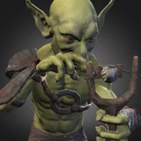
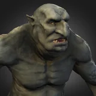

Unit
Drowned Pikeman
Drowned Pikeman is a tier 1 tank unit of the Drowned, Warden and Watcher alliances.
Drowned Pikeman is a tier 1 (Common) tank unit. It costs 1 gold in the shop and carries the Drowned, Warden and Watcher alliances.
Ability
 Undertow
Undertow
Drags the target under, dealing physical damage and stripping its armour for 10 seconds.
- Cast
- When mana is full. Casting spends all of it.
- Cast point
- 0.3 seconds from the start of the cast to its effect.
- Targets
- Its current target.
- Deals 100 / 175 / 250 physical damage to the target (values per star).
- Applies Corroded (units) (-8 / -14 / -20 armour) to the target for 10 seconds (values per star).
Full details are on the Undertow ability page. See Mana and casting for how mana is gained.
Stats
| Stat | 1 star | 2 stars | 3 stars |
|---|---|---|---|
| Health | 900 | 1,800 | 3,600 |
| Attack damage | 60 to 85 | 120 to 170 | 240 to 340 |
| Seconds per attack | 1.2 | 1.2 | 1.2 |
| Attacks per second | 0.83 | 0.83 | 0.83 |
| Wind-up before the hit (seconds) | 0.36 | 0.36 | 0.36 |
| Average damage per second | 60.4 | 120.8 | 241.7 |
| Attack range (cells) | 1 | 1 | 1 |
| Armour | 5 | 5 | 5 |
| Magic resistance | 0% | 0% | 0% |
| Maximum mana | 75 | 75 | 75 |
| Move speed | 290 | 290 | 290 |
| Seconds to cross one cell | 0.44 | 0.44 | 0.44 |
| Projectile speed (cells per second) | None, hits at once | None, hits at once | None, hits at once |
Seconds per attack is the time from the start of one attack to the start of the next, before any attack speed bonus. Average damage per second is the middle of the damage range divided by the seconds per attack, before armour, bonuses and critical strikes.
Cost, upgrades and selling
3 copies of Drowned Pikeman at the same star level combine into one copy of the next star level, up to 3 stars. See Star upgrades for how combining works and Gold and income for gold.
| 1 star | 2 stars | 3 stars | |
|---|---|---|---|
| Copies needed | 1 | 3 | 9 |
| Gold to buy those copies | 1 | 3 | 9 |
| Sell value in gold | 1 | 3 | 5 |
| Copies returned to the pool when sold | 1 | 3 | 9 |
The shared pool holds 30 copies of Drowned Pikeman for all players together, as it does for every tier 1 unit. See The shared pool and The shop.
Alliances
 Drowned race
Drowned race
Folk of the flooded undercity, slick with black water. All allies gain magic resistance.
| Units needed | Effect |
|---|---|
| 2 | All allies: +30% magic resistance. Allies summoned later in the fight get this too. |
| 4 | All allies: +55% magic resistance. Allies summoned later in the fight get this too. |
Warden class
Wardens of the spire gates. Wardens gain bonus armour.
 Watcher class
Watcher class
Lookouts who punish every spell they see. With two Watchers, Watchers deal 20% bonus damage; with four, every allied unit does, 25%.
| Units needed | Effect |
|---|---|
| 2 | Watcher units: +20% attack damage. The attack damage bonus is for attacks only: ability damage is not raised. |
| 4 | All allies: +25% attack damage. Allies summoned later in the fight get this too. The attack damage bonus is for attacks only: ability damage is not raised. |
How units are counted towards a step is explained under How alliances count.
Fights well with
These units share an alliance with Drowned Pikeman, so fielding them together works towards the same steps.


Other tier 1 units
The other tier 1 units. They cost the same and share the same tier odds. Within the tier, a unit with more copies left in the pool is offered more often. See The shop and the Unit stat table.
 Ashen Pilgrim
Ashen Pilgrim Bog Hexer
Bog Hexer
Gargoyle Gunner Grave Archer
Grave Archer Gutter Scavenger
Gutter Scavenger Hive Skulker
Hive Skulker Mire Skirmisher
Mire Skirmisher Oath Cutter
Oath Cutter Pit Imp
Pit Imp Rift Mote
Rift Mote Spire Acolyte
Spire Acolyte Thornback Boar
Thornback Boar
Thornwood Seer